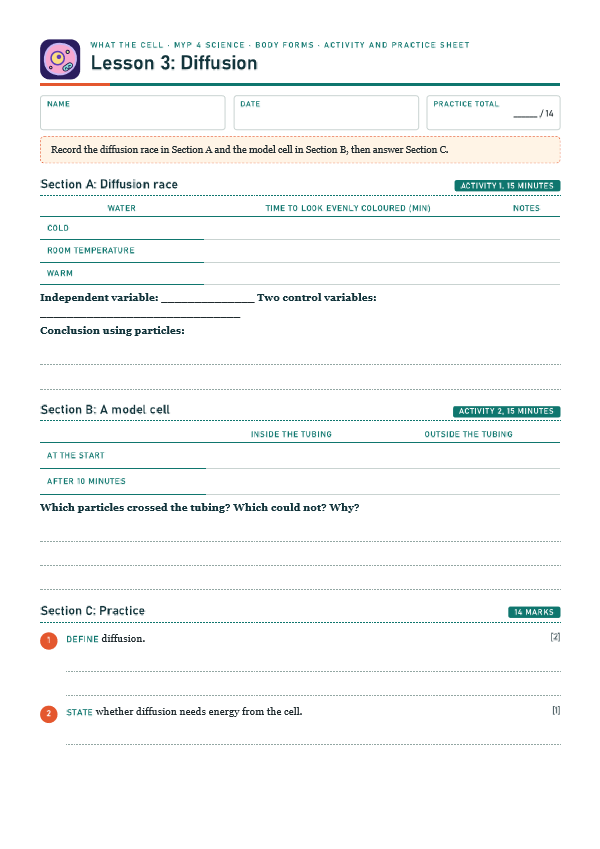

By the end of the lesson you can
- Define diffusion
- Explain diffusion using particles and a concentration gradient
- Describe three factors that change the rate of diffusion
- Give examples of diffusion in the body
Keys: arrows or a presentation clicker move the slides, F for full screen. Slides with a red dot have a video or simulation.
Videos (all 5 minutes or less)
- 3:52
Transport in cells: diffusion and osmosis
FuseSchool. While you watch: Which way do particles move in diffusion? Slide 11.
Simulations
- Lab
- PhET
Print and practise

Activity and practice sheet
Used in the lesson’s activities, with practice questions. Your teacher has the answers.
Download (PDF)Lesson 3 slides
All 18 slides in one file, to read again or print. The video buttons on the slides open YouTube.
Download the slides (PDF)Revising? The Revision tab on the unit page has the unit notes and review.
Class activity pack
Everything to print for the lesson’s activities: picture cards, sorting mats, station cards with their kit lists, and the teacher’s set-up notes. Print it before class.
Download the activity pack (PDF)Notes: Diffusion
diffusion
Particles spreading from where there are many to where there are few. For example: smell of food across a room.
concentration
How many particles are in a certain space. For example: strong or weak squash.
concentration gradient
The difference in concentration between two places. For example: high in the lungs, low in the blood.
partially permeable
Lets small particles through but not big ones. For example: the cell membrane.
passive
Needs no energy from the cell. For example: diffusion is passive.
rate
How fast something happens. For example: faster when warmer.
diffusion
The net movement of particles from an area of higher concentration to an area of lower concentration, until they are evenly spread. For example: oxygen into the blood.
Key words
| diffusion | net movement of particles from high to low concentration |
|---|---|
| concentration gradient | difference in concentration between two areas |
| passive | needs no energy |
| partially permeable | lets some particles through, not others |
| rate | how fast |
| surface area | the area of the outside of something |